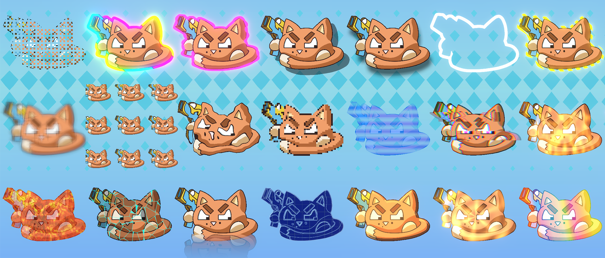
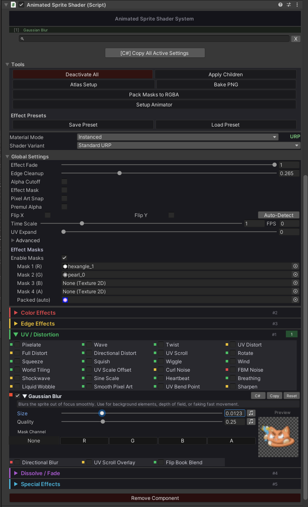

Animated sprite effects for Unity.
A practical setup guide for SpriteRenderer, UI Image, particles, render pipelines, presets, masks, animation, and runtime control.

Quick start
Use this path for a new project or a clean import.
Import the package
Import the Unity package. Keep the folder structure under Assets/AnimatedSprite/.
Run first setup
Open Tools > AnimatedSprite > First Import Setup. Select the render pipeline used by your project.
Add the manager
Select a SpriteRenderer or UI Image object, then add AnimatedSpriteShader. You can also use GameObject > Animated Sprite > Add Manager.
Pick the variant
Choose the variant that matches the renderer. Use the variant table if you are not sure.
Enable effects
Open an effect group, enable one effect, adjust its fields, then press Play or preview it in the Scene view.
Standard in Built-in, Standard URP in URP, or HDRP Unlit in HDRP.Pipeline setup
FlexiSprite supports Built-in, URP, and HDRP. The shader files must be built for the same pipeline as the Unity project.
Set the active pipeline
Open Tools > AnimatedSprite > Master Setup. In the state bar, compare Unity's project pipeline with FlexiSprite's shader build.
If they do not match, press Set Target to Project Pipeline, then Full Rebuild for Project Pipeline.
Import matching demos
Use Import Demo Packages for Project Pipeline. This imports demo scenes that use the current pipeline variants.
Do not mix URP demo materials into a Built-in project or Built-in materials into a URP project.
Demo scene
Use the demo to test effects before adding them to your own assets.
Inspector
This is the main workflow. Add the component, pick effects, and tune them here.
Search and filters
Search by effect name or keyword to find the control you need faster.
Performance dots
Green, yellow, and red dots show the relative cost of an effect before you commit to it.
Active summary
The top summary shows which effects are enabled on the selected object.
Keyframe buttons
Use the keyframe button next to supported fields to animate values without manual setup.
Copy, paste, reset
Copy one effect, paste it to another sprite, or reset only that effect instead of the whole component.
Code copy
Use the C# copy button or Copy All Active Settings to generate field assignments for scripts.
Tools
Use the tools area for presets, sprite atlas setup, and SDF baking.
Global settings
Mask textures, global fade, pixel snap, stencil, and lighting controls are grouped in one place.
Live preview
Expanded effects show a live preview so you can tune values without guessing.

Master Setup
Use this window for project-wide setup, rebuilds, migration, and effect ordering.
Project and shader state
Check whether the Unity project pipeline matches the current FlexiSprite shader build target.
Variant selection
Compile all variants, keep only the active pipeline, or scan Build Settings scenes to auto-enable the variants you actually use.
Full rebuild
Use this after changing the shader build target. It regenerates HLSL, C# bindings, and shader files.
Pipeline migration
Migrate AnimatedSprite objects between Built-in, URP, and HDRP. You can target open scenes, all scenes, or a selected folder.
Import matching demos
Import demo packages that match the current project pipeline so the example scenes work out of the box.
Global lighting
Adjust project-wide direct and ambient multipliers. HDRP also exposes extra environment controls for lit variants.
Effect order
Reorder groups or individual effects when you need a different stack order for the final look.
Effects
Start with one or two effects, then add more only when needed. Heavy blur, glow, and trail effects cost more than simple color changes.
Color Basic
13 effectsColor Extended
24 effectsEdges
15 effectsUV and Motion
23 effectsFilters
5 effectsDissolves
16 effectsVFX
20 effectsGameplay
8 effectsOutline and SDF
Use the normal outline for quick borders. Use SDF when the outline needs to stay smooth at different sizes.
Fast outline
Enable Outline, choose the color, set the width, and adjust softness. This is enough for most sprites.
SDF outline
Set outline style to SDF, assign or bake an SDF texture, then tune width and edge softness.
Masks
Masks limit effects to selected parts of the sprite.
Enable masks
Open Global Settings > Effect Masks and enable masks.
Assign mask textures
Use R, G, B, and A channels as four separate mask slots.
Choose a mask per effect
Open an effect and set its mask channel. Channel 0 means no mask.
Animation
Animate effect fields with Unity's Animation window or control them from code.
Unity Animation window
Select the object, open Window > Animation > Animation, add an AnimatedSpriteShader property, and keyframe the value.
Animation browser
If the object has an Animator, the inspector can show clips that animate shader properties and open the selected clip.
Presets
Use presets when the same effect setup is used by multiple sprites.
- Create: right-click in Project, then use
Create > Animated Sprite > Effect Preset. - Save from object: open the component context menu and choose
Save as Effect Preset. - Load to object: use
Load Effect Preseton another AnimatedSpriteShader component. - Reuse: keep presets for common states such as hit flash, poison, frozen, glow, selected, or dissolve.
Scripting
All effect fields are public. After changing one effect at runtime, call MarkEffectDirty(EffectId.YourEffect). Use MarkDirty() only when you need a broader refresh.
Use this most of the time
When you change one effect such as Hit Effect, Outline, or Dissolve, call MarkEffectDirty for that effect.
Use full refresh rarely
Use MarkDirty() for wider changes such as variant switches or other full component refresh cases.
using UnityEngine;
using FlexiSprite;
public class DamageFlash : MonoBehaviour
{
[SerializeField] private AnimatedSpriteShader spriteFx;
public void ShowHitFlash()
{
if (!spriteFx)
spriteFx = GetComponent<AnimatedSpriteShader>();
spriteFx.hitEffectEnabled = true;
spriteFx.hitEffectBlend = 1f;
spriteFx.MarkEffectDirty(EffectId.HitEffect);
}
}
To find field names, set up the effect in the inspector and use Copy All Active Settings or the per-effect C# copy button.
Performance
Keep the setup simple on objects that appear many times on screen.
Use cheap effects first
Color changes, tint, hue shift, saturation, brightness, UV scroll, and simple dissolve are usually safe.
Limit expensive effects
Blur, bloom, soft shadow, glow, trails, heavy noise, and multi-sample outlines should be used on fewer objects.
Use the right variant
Do not use lit variants unless the sprite needs lights. Do not use GUI variants on SpriteRenderer objects.
Reduce unique materials
Share presets and settings where possible. UI Images use their own material instance for per-object control.
Reference: migrate pipelines
Use this when moving a project between Built-in, URP, and HDRP.
Back up the project
Commit to version control or duplicate the project before migration.
Switch Unity pipeline first
Set the render pipeline in Unity project settings. Built-in uses no SRP asset.
Rebuild FlexiSprite shaders
Open Tools > AnimatedSprite > Master Setup and run Full Rebuild for Project Pipeline.
Choose migration scope
Use Open Scenes for a small test, All Scenes for the full project, or Selected Folder for a scene folder.
Run migration
Choose the source and target pipeline. Run the migration. Save changed scenes and prefabs.
Check one sprite and one UI object
Confirm that a SpriteRenderer uses a sprite variant and a UI Image uses a GUI variant.
Reference: choose a shader variant
Match the variant to the renderer first, then to the visual style.
| Pipeline | Variant | Use on | When to use |
|---|---|---|---|
| Built-in | Standard | SpriteRenderer | Default choice for normal sprites. |
| Built-in | Additive | SpriteRenderer | Glows, magic, fire, particles, light-only VFX. |
| Built-in | Multiply | SpriteRenderer | Darkening, decals, shadow-like overlays. |
| Built-in | Standard Premultiply | SpriteRenderer | Sprites exported with premultiplied alpha. |
| Built-in | Additive Soft | SpriteRenderer | Softer additive VFX with less blown-out edges. |
| Built-in | GUI | UI Image | Default UI Image variant. |
| Built-in | GUI Additive | UI Image | Glowing UI Images. |
| Built-in | GUI Premultiply | UI Image | Premultiplied alpha UI sprites. |
| Built-in | Screen Space Overlay | UI / Overlay | Use when a Built-in Canvas overlay needs the dedicated overlay path. |
| Built-in | 3D Lit | SpriteRenderer / Mesh | Sprites affected by Built-in scene lighting. |
| Built-in | 3D Lit Cutout | SpriteRenderer / Mesh | Lit sprites that need hard alpha and depth sorting. |
| URP | Standard URP | SpriteRenderer | Default unlit URP sprite. |
| URP | Additive URP | SpriteRenderer | URP glow and VFX sprites. |
| URP | Premultiply URP | SpriteRenderer | Premultiplied alpha in URP. |
| URP | GUI URP | UI Image | Default UI Image variant in URP. |
| URP | GUI Additive URP | UI Image | Glowing UI Images in URP. |
| URP | 2D Lit URP | SpriteRenderer | Use with URP 2D Renderer lights. |
| URP | 2D Lit Additive URP | SpriteRenderer | Additive sprites that still react to URP 2D lights. |
| URP | 3D Lit URP | SpriteRenderer / Mesh | Use in URP scenes with 3D lights. |
| URP | 3D Lit Cutout URP | SpriteRenderer / Mesh | URP lit sprites with hard alpha and depth. |
| URP | 3D Lit Additive URP | SpriteRenderer / Mesh | URP lit additive VFX. |
| HDRP | HDRP Unlit | SpriteRenderer / Mesh | Default HDRP sprite path. |
| HDRP | HDRP Additive | SpriteRenderer / Mesh | HDRP glow and VFX sprites. |
| HDRP | HDRP Lit | SpriteRenderer / Mesh | Sprites affected by HDRP lighting. No dedicated HDRP UI variant. |
Common problems
| Problem | Fix |
|---|---|
| Sprite is pink | Open Master Setup and run Full Rebuild for Project Pipeline. Then check that the object uses a variant from the same pipeline. |
| UI Image does not show the effect | Use a GUI variant. SpriteRenderer variants are not for Canvas UI. |
| URP 2D lights do not affect the sprite | Use 2D Lit URP or 2D Lit Additive URP and make sure the project uses the URP 2D Renderer. |
| Outline looks rough when scaled | Use SDF outline and bake an SDF texture for that sprite. |
| Runtime value changed but visual did not update | Call MarkEffectDirty(EffectId.YourEffect) after changing one effect from code. Use MarkDirty() only for a full refresh. |
| Too many sprites are expensive | Reduce blur, glow, soft shadow, trails, heavy noise, and thick outlines on repeated objects. |
FAQ
Can I combine effects?
Yes. Enable multiple effects on the same component. Use Master Setup only if you need to change global effect order.
Can I animate effects?
Yes. Use Unity Animation clips or change public fields from scripts.
Should every sprite have its own material?
No. Use shared settings when possible. Use per-object settings only where needed.
Which variant should I try first?
Use Standard for normal SpriteRenderers, GUI for UI Images, and 2D Lit URP only when using URP 2D lights.